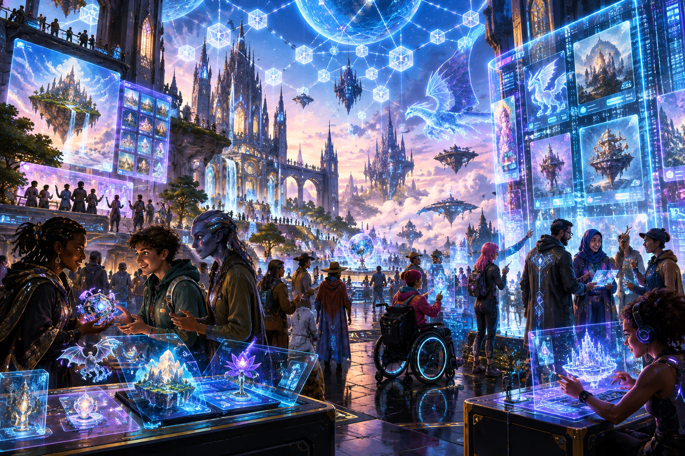
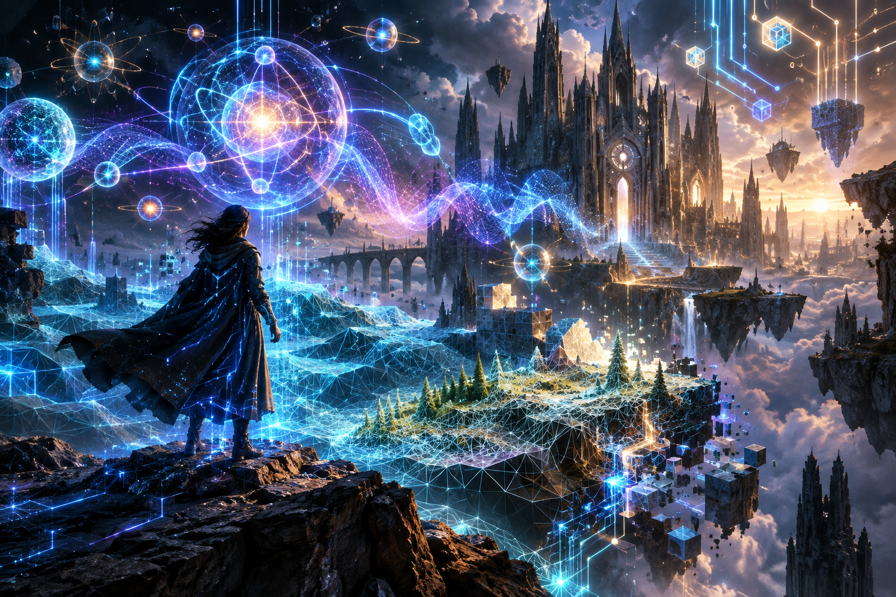
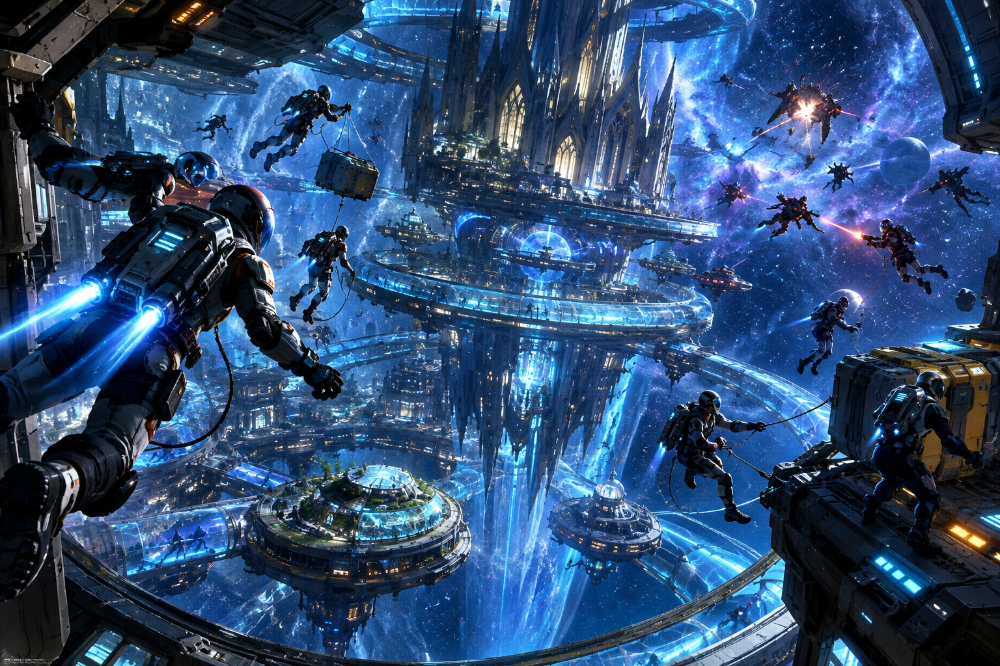
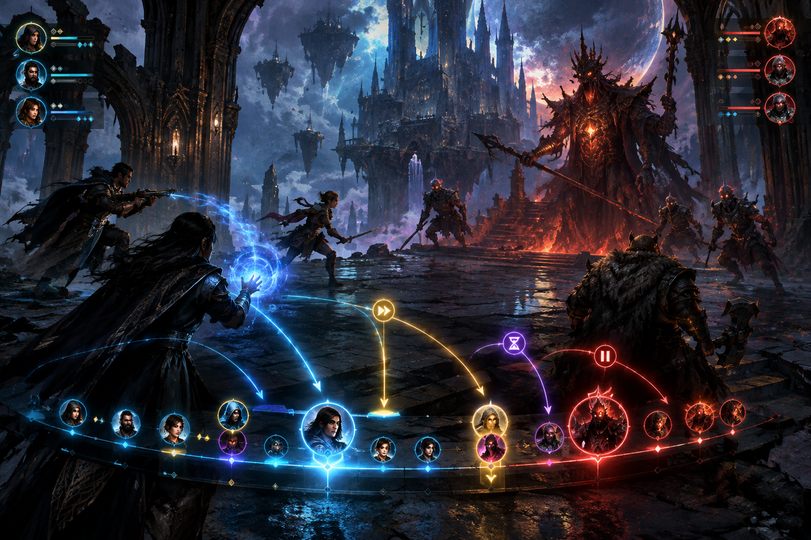
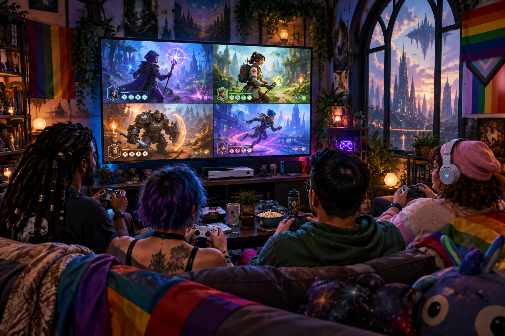

Beyond Play-to-Earn: How Blockchain Gaming Culture Found Its Footing in 2026
2026 marks the year blockchain games move past their earliest pitfalls, carving a new path for player-driven economies, true digital ownership, and authentic community agency across genres—a shift with ripple effects for gaming culture at large.
READ THE STORY ↗
Quantum Horizons: The First Steps of Quantum Computing in PC Game Development
Developers are beginning to experiment with quantum computing to shape the future of procedural content and adaptive experiences in PC games. We look at what’s real, what’s at stake, and what comes next.
READ THE STORY ↗
Upward Bound: Exploring Zero-Gravity Mechanics in Next-Gen MMORPGs
Zero-gravity—once reserved for astronauts and science fiction—is now reshaping the way we experience MMORPGs. We pull back the curtain on how leading developers are overcoming the laws of physics to create exhilarating new worlds where what goes up never really comes down.
READ THE STORY ↗
From Turn Order to Time Pressure: How Conditional Turn-Based Systems Are Evolving Combat Strategies in RPGs
Once defined by predictable sequence, turn-based RPG combat is being revitalized by conditional initiative, real-time triggers, and evolving action cues. We explore how these innovations are deepening tactics, making every encounter more dynamic and demanding than ever.
READ THE STORY ↗
Loadouts and Legends: How Customizable Characters Are Redefining Console Co-Op Play
Deep customizability—across cosmetics, gear, and roles—is transforming cooperative play on consoles. This is how player-created heroes, not preset avatars, are forging new social and tactical experiences in co-op gaming.
READ THE STORY ↗